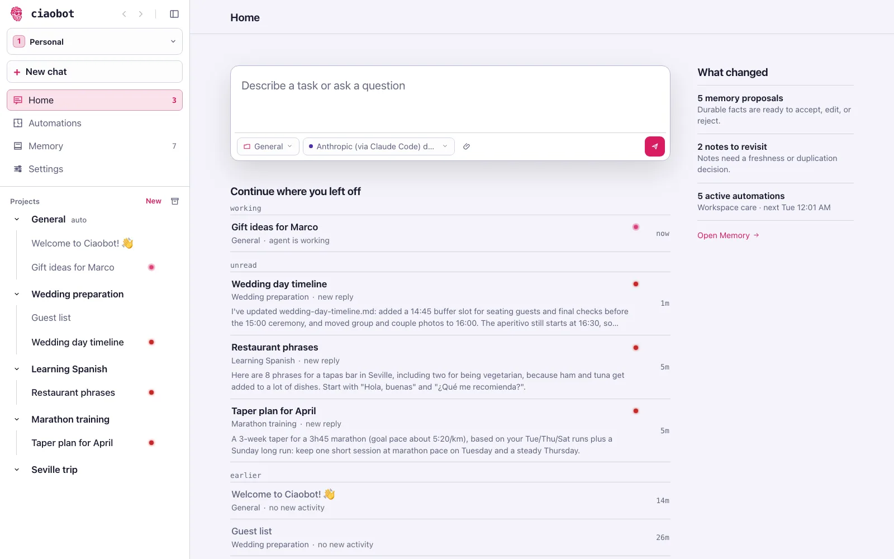
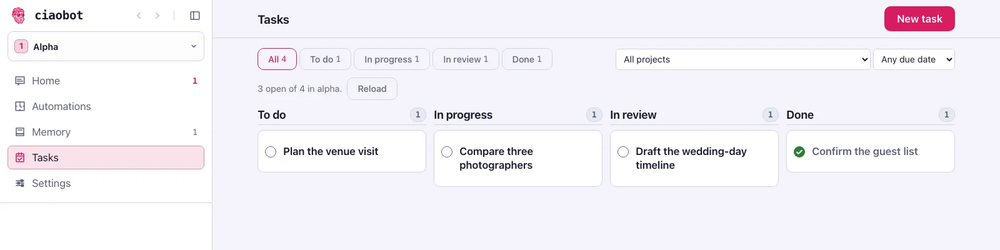
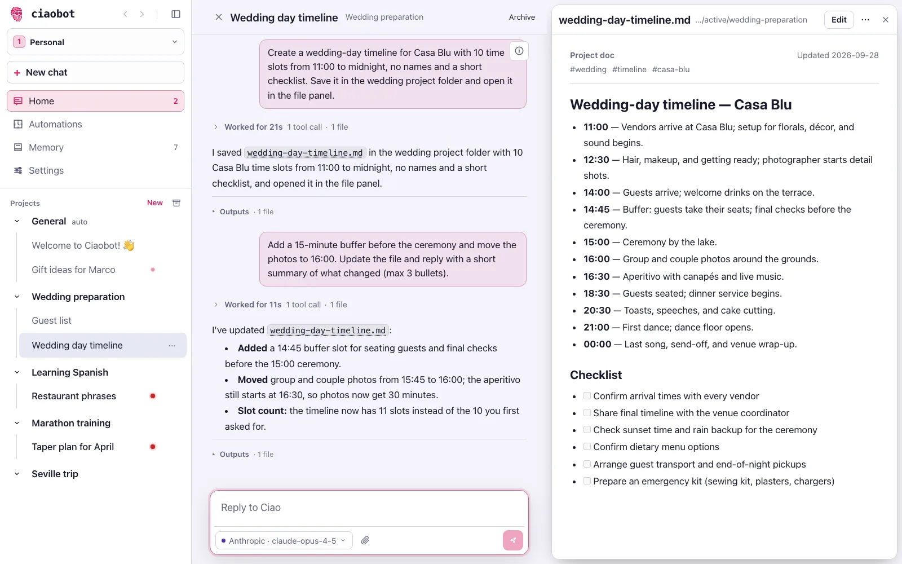
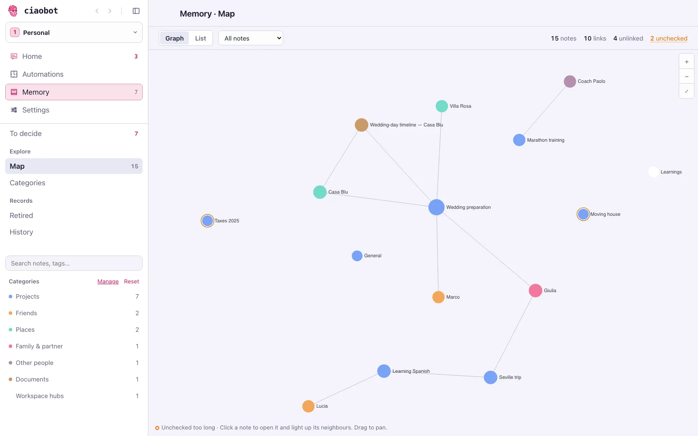
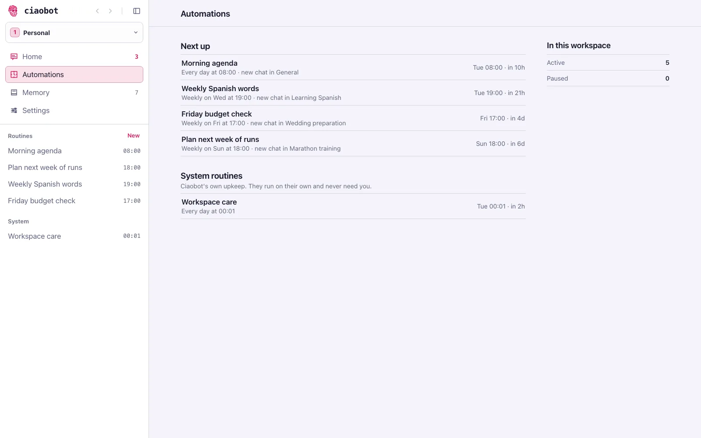
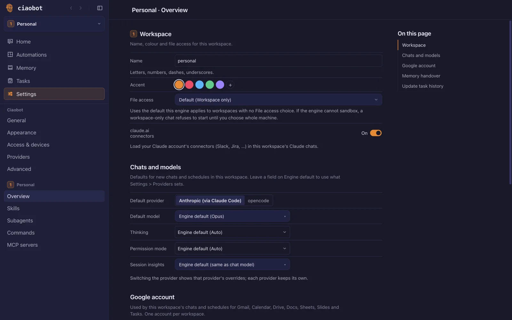
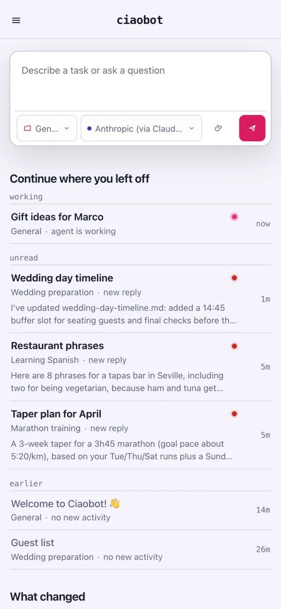

What Ciaobot can do
Projects, files, memory and automations—using the AI agents you already have.
Workspaces, projects and chats
Keep personal, work and client life in separate workspaces. A project holds the background for one topic; a chat handles one task with that context already attached.
Home brings together new tasks, replies and anything waiting for you. Completed projects leave the sidebar without losing their notes.
Try it: choose New beside Projects, or ask Ciaobot to create a project. Use New chat for each task.

Projects linked to a code repository
Link a project to a Git repository, then turn on code mode for a chat. The agent follows the repository's AGENTS.md, loads its skills and can write inside it while your project notes and memory stay in Ciaobot.
Chat details shows the branch, worktree and uncommitted changes. Code lessons can be proposed for the repository's AGENTS.md; you review them before anything is written.
Try it: open a project and choose Repository → Link, or ask: “Link this project to ~/repos/my-app”.
Tasks you can track and delegate
Keep work on a To do → In progress → In review → Done board, with projects, descriptions and due dates. Records stay as Markdown in your vault.
Delegate a task to an agent, review the prompt before it starts, and follow the resulting chat. When the agent finishes, check the result and choose Approve Done.
Try it: open Tasks, choose New task, then Delegate to agent.

Documents side by side
Open notes, plans and tables beside the chat. Highlight a passage or table cell, add a comment, and the next message tells the agent exactly what to change.
Attachments in Word, PowerPoint, Excel and PDF formats are converted to Markdown with AnyDoc. Ciaobot can also read web pages and available YouTube captions.
Try it: ask for a document, then use Pin to sidebar to keep it beside the conversation.

Memory you can see and correct
Archive a chat and Ciaobot files useful decisions, details and preferences as Markdown. Uncertain changes wait in To decide, and managed changes can be undone.
The Memory view connects projects, people and places in a searchable map. Your notes remain readable outside Ciaobot.
Try it: say “Remember that I'm allergic to penicillin”, or open Memory to review what was filed. How memory works →

Automations
Turn repeated requests into one-off, daily, weekly, monthly or interval-based routines. Every run leaves its result in a chat, where you can read it or continue the work.
The included Workspace care routine tidies memory each night. Anything uncertain waits for your review.
Try it: open Automations and choose New, or ask: “Every weekday at 8, tell me what's on my calendar”.

Webhook triggers
Let GitHub Actions, n8n, Zapier, Make, Home Assistant or any HTTP client start work when an event happens. The event opens a chat with your instructions and the sender's details.
The sender gets a secret URL but cannot change your instructions, workspace, project or model. The sending tool must be able to reach your Ciaobot host, for example through Tailscale.
Try it: open Automations → Webhook triggers, create a trigger, then copy its URL and secret into the sending tool.
curl -X POST "http://100.101.102.103:8443/hooks/v1/$TRIGGER" \
-H "Authorization: Bearer $SECRET" \
-H "Idempotency-Key: build-4821" \
-H "Content-Type: application/json" \
-d '{"text": "Nightly build failed on main"}'Google Workspace, built in
Ready-made skills connect Gmail, Calendar, Drive, Docs, Sheets, Slides, Tasks and Forms through Google's gws CLI.
Link one Google account per workspace, so personal mail stays in Personal and company mail stays in Work.
Try it: open the workspace's settings, connect Google, then ask: “What's on my calendar tomorrow?”

File access you control
Workspace only confines the agent's shell and file tools to that workspace on macOS and Linux. Whole machine lets it read what your user account can read. Windows uses Whole machine because it has no equivalent sandbox.
File access does not limit network requests, and it does not confine the terminal panel, which is your own shell. Linux's sandbox uses bubblewrap and may need the one-time AppArmor setup in the Linux guide.
Try it: open the workspace's settings and choose File access.
From any device
Run Ciaobot on one Mac, Windows PC or server, then use the same chats, projects and memory from your phone, tablet or another computer. The browser interface can be installed as an app.
A small always-on VPS keeps everything available even when your laptop is closed.
Try it: follow the remote access guide to connect your devices privately with Tailscale.
